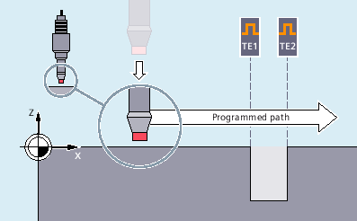
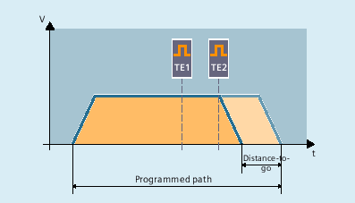

More information
MEASA or MEAWA
With MEASA or MEAWA for the programmed axis, up to four measured values are acquired for each measurement and the measurement results are then saved in system variables.
The following diagram shows the principle of operation of MEASA/MEAWA:
MEASA or MEAWA is used in this example to measure one drilled hole for the X axis along a programmed traversing path. The two trigger events TE1 and TE2 required for this are evaluated in the mode "one after the other in the programmed order". A contact-free switching probe is used (e.g. inductive probe).
When using function variant "Measurement with delete distance-to-go (MEASA)", axis motion is stopped after all programmed trigger events:
MEAWA is used for special measuring tasks in which a programmed position always has to be approached.
| Note |
MEASA cannot be programmed in synchronized actions. As an alternative, MEAWA plus delete distance-to-go can be programmed as a synchronized action. If the measuring job with MEAWA is started from synchronized actions, the measured values will only be available in the machine coordinate system. |
Reading measurement results (MEASA/MEAWA)
The probe measured values for MEASA/MEAWA can be read via the following system variables in the part program and in synchronized actions:
System variable | Meaning |
|---|---|
$AA_MM1[<Axis>] ... $AA_MM4[<Axis>] | Probe measured value for trigger event 1 in the machine coordinate system ... Probe measured value for trigger event 4 in the machine coordinate system |
$AA_MW1[<Axis>] ... $AA_MW4[<Axis>] | Probe measured value for trigger event 1 in the workpiece coordinate system ... Probe measured value for trigger event 4 in the workpiece coordinate system |
If a measuring job is executed by two measuring systems, each of the two possible trigger events is acquired from both measuring systems.
The assignment of system variables is then as follows:
System variable | Meaning |
|---|---|
$AA_MM1[<Axis>] or $AA_MW1[<Axis>] | Measured value from measuring system 1 on trigger event 1 |
$AA_MM2[<Axis>] or $AA_MW2[<Axis>] | Measured value from measuring system 2 on trigger event 1 |
$AA_MM3[<Axis>] or $AA_MW3[<Axis>] | Measured value from measuring system 1 on trigger event 2 |
$AA_MM4[<Axis>] or $AA_MW4[<Axis>] | Measured value from measuring system 2 on trigger event 2 |
MEAC
During continuous measurement (MEAC), the programmed trigger events are reactivated after each occurrence. This results in cyclically repeating switching edge programming and evaluation.
The measured values for MEAC are in the machine coordinate system and stored in the programmed FIFO[<n>] memory. If two probes are configured for the measurement, the measured values of the second probe are stored separately in the FIFO[<n>+1] memory configured specifically for this purpose.
The FIFO memory is a circular buffer in which measured values are written to $AC_FIFO variables according to the circular principle. Contents can be read only once from the circular buffer. If this measured data is to be used several times, it must be buffered in the net data.
If the number of measured values for the FIFO memory exceeds the maximum value defined in machine data, the measurement is automatically terminated.
An endless measuring process can be implemented by reading out measured values cyclically. In this case, data must be read out at least with the same frequency as new measured values are input.
A typical application example for MEAC is the measurement of toothed workpieces:

More information: Function Manual Synchronized Actions
Feedrate
The feedrate must be adjusted to suit the particular measuring task. The permissible feedrate depends on the number of programmed trigger events and the ratio of the interpolation cycle to the position controller cycle.
In the case of MEASA and MEAWA, the correctness of results can be only guaranteed for feedrates at which no more than one trigger event of the same type and no more than 4 trigger events of different types occur in each position control cycle.
In the case of continuous measurement with MEAC, the ratio between interpolation cycle and the position control cycle must not exceed 1:8.
Optimization
With the use of PROFIBUS telegram 391 (default setting for PROFIBUS communication) only one measured value is possible for each trigger event and position control cycle.
When using PROFIBUS telegram 395, the number of measured values per trigger event and position controller cycle can be increased as follows for MEAC in measurement mode 1:
One probe: 8 measured values for a positive and 8 for a negative edge
Two probes: 4 measured values for a rising and 4 for a falling edge for each probe
Higher feedrates or speeds can thus be achieved.
Query status
If an evaluation is required in the program, whether a probe has been deflected or has switched, the status can be queried through the following system variables:
System variable | Meaning | Data type | Value | Meaning |
|---|---|---|---|---|
$A_PROBE[<n>] | Deflection state of the probe | INT | 0 | Probe not deflected. |
1 | Probe deflected. | |||
$AC_MEA[<n>] | Switching status of the probe $AC_MEA[<n>] is automatically reset at the beginning of a measurement. | INT | 0 | Probe has not switched |
1 | Probe has switched (all trigger events programmed in the measuring block have taken place). |
| Note |
If measurement is started from synchronized actions, $AC_MEA is no longer updated. In this case, the NC/PLC interface signal $AA_MEAACT==1: Measurement active $AA_MEAACT==0: Measurement not active |
Probe limitation
In the NC program or in synchronized actions, when PROFIBUS telegram 395 is used, the probe limiting status can be read using system variable A_PROBE_LIMITED:
$A_PROBE_LIMITED[<n>] == 0: Probe limitation inactive/reset
$A_PROBE_LIMITED[<n>] == 1: Probe limitation active
<n> = probe number
Protection against programming errors
The following programming errors are detected and indicated as errors:
Description | Example |
|---|---|
MEASA/MEAWA together with MEAS/MEAW in the same block |
|
MEASA/MEAWA with number of parameters <2 or >5 |
|
MEASA/MEAWA with trigger event not equal to 1/ -1/ 2/ -2 |
|
MEASA/MEAWA with invalid mode |
|
MEASA/MEAWA with measurement mode 1 and trigger event programmed twice |
|
MEASA/MEAWA and missing geometry axis |
|
Inconsistent measuring job with geometry axes |
|
PLC signals
NC → PLC
Basic Program Plus | Basic Program | |
|---|---|---|
<Axis>.basic.in.measurementActive | LBP_Axis*.E_MeasAct | DB31, … .DBX62.3 |